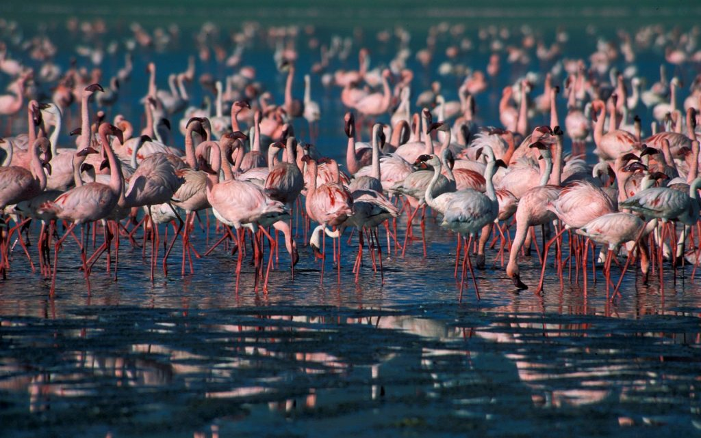

Embark on an unforgettable journey through Kenya’s iconic national parks aboard a comfortable and rugged 4×4 safari Landcruiser. This luxury package offers unparalleled game viewing, exquisite accommodations, and the unique experience of traversing the diverse landscapes of Kenya by road.

Day 1: Arrival in Nairobi & Road Transfer to Amboseli National Park
Duration: 2 NightsUpon arrival at Jomo Kenyatta International Airport (NBO) in Nairobi, you will be warmly met by an Arena Africa Safaris representative. After a brief welcome and orientation, you will begin your scenic road transfer in a private 4×4 safari Land Cruiser to Amboseli National Park, offering glimpses of rural Kenyan life. Arrive at your luxury accommodation featuring iconic views of Africa’s highest peak, Mount Kilimanjaro. Later in the afternoon, embark on your first exhilarating game drive tracking large herds of elephants, lions, zebras, and giraffes. Return to the lodge for a refreshing sundowner cocktail and a gourmet dinner.
Accomodation: Elewana Tortilis Camp / Amboseli Serena Safari Lodge / Tawi Lodge
Day 2: Amboseli National Park — Elephant Encounters & Kilimanjaro Views
Accomodation: Elewana Tortilis Camp / Amboseli Serena Safari Lodge / Tawi LodgeWake up early for a spectacular sunrise game drive when wildlife is most active. Witness the golden light paint the landscape and the snow-capped peak of Kilimanjaro. Enjoy a custom bush breakfast in a scenic spot within the park, surrounded by the sights and sounds of the wilderness. Continue with mid-morning tracking runs or visit Observation Hill for panoramic views of the entire park. In the afternoon, enjoy lunch, followed by an optional Maasai cultural village visit or another focused game drive.

Day 3: Amboseli to Lake Nakuru National Park
Duration: 2 NightsAfter an early breakfast, bid farewell to Amboseli and begin your comprehensive road journey in your private 4×4 safari Land Cruiser to Lake Nakuru National Park. Traverse different agricultural terrains and Rift Valley landscapes, enjoying a delicious packed lunch en route. Upon afternoon arrival at the park—famous as a sanctuary for both black and white rhinoceroses—embark directly on a late game drive. You will have excellent chances to spot rhinos, Rothschild’s giraffes, buffaloes, zebras, lions, and elusive leopards.
Accomodation: Sarova Lion Hill Game Lodge / Ziwa Bush Lodge
Day 4: Lake Nakuru National Park — Birdlife & Rhino Sanctuary
Accomodation: Sarova Lion Hill Game Lodge / Ziwa Bush LodgeStart your day with an early morning game drive to capture the beauty of the park in the soft morning light, focusing on areas known for predator tracking and rhino sightings. Return to the lodge for a hearty breakfast. Mid-morning, explore the park further, visiting the Baboon Cliff viewpoint for panoramic vistas of the lake and its seasonal flamingos, followed by a visit to the tranquil Makalia Waterfall. Spend the afternoon at your leisure before a final bird-watching game drive along the shores.

Day 5: Lake Nakuru to Maasai Mara National Reserve
Duration: 3 NightsAfter a final breakfast, begin your scenic road journey in your private 4×4 safari Land Cruiser to the world-renowned Maasai Mara National Reserve. This exciting drive takes you through the breathtaking escarpments of the Great Rift Valley, offering stunning photo opportunities. Enjoy a delicious packed lunch en route. Upon afternoon arrival, check into your luxury base camp, then head out immediately for a thrilling late afternoon game drive tracking lions, leopards, elephants, and seasonal Great Migration herds.
Accomodation: Mahali Mzuri / Fairmont Mara Safari Club / Mara Serena / Sand River by Elewana / Angama Mara
Day 6: Maasai Mara National Reserve — The Heart of Safari
Accomodation: Mahali Mzuri / Fairmont Mara Safari Club / Mara Serena / Sand River by Elewana / Angama MaraRise before dawn for an optional, unforgettable hot air balloon safari drifting over the Mara plains at sunrise, followed by a champagne breakfast in the bush. Alternatively, embark on an early morning overland game drive to intercept active predators. Spend the rest of the day exploring different sectors of the Maasai Mara as your experienced guide tracks down big cats and vast herds of migrating wildebeests and zebras. Enjoy lunch and poolside relaxation before a final evening drive.

Day 7: Maasai Mara National Reserve — Cultural Immersion & Final Safaris
Accomodation: Mahali Mzuri / Fairmont Mara Safari Club / Mara Serena / Sand River by Elewana / Angama MaraEnjoy a flexible morning consisting of a game drive or an intimate walking safari to connect with the bush on a deeper level. Later, visit a local Maasai village (Manyatta) for an authentic cultural immersion. Learn about their ancient traditions, witness jumping dances, and discover their harmonious coexistence with the wildlife. Conclude with a final afternoon game drive and an exquisite farewell dinner under the African sky.

Day 8: Departure from Maasai Mara & Road Transfer to Nairobi
End of OperationsAfter a final breakfast at your lodge, enjoy a short farewell game drive as you exit the reserve and begin your road transfer in your private 4×4 safari Land Cruiser back to Nairobi. This journey offers a final opportunity to witness the changing landscapes of Kenya. Enjoy lunch en route. Upon afternoon arrival in Nairobi, you will be transferred directly to Jomo Kenyatta International Airport (NBO) for your international flight out.
"Thank you for choosing our company"